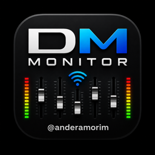

Every musician adjusts their own in-ear or wedge mix from their phone — no app to install on the phones, no extra hardware.
Free · for Yamaha DM-series consoles · Mac · Windows · Raspberry Pitar xzf dm-monitor-pi-*.tar.gz && sudo ./dm-monitor/install.sh --hostname dm-monitorDM Monitor is free and independent, so the installers aren't signed with a paid Apple/Microsoft certificate yet. The download is the same file published here; every update is checked against its checksum before installing.
DM Monitor is free. If it helps your team on Sunday, you can buy me a coffee — it keeps the updates coming.
Chave: —